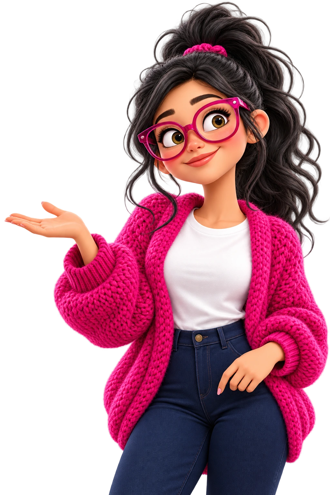

TRABAJOS SELECCIONADOS
Cada proyecto,
su propio universo.
7 proyectos


Aquí hay espacio para nuevas ideas.
Cada proyecto abre su web en otra pestaña.
El próximo gran clik
puede ser el tuyo.


TRABAJOS SELECCIONADOS
7 proyectos
Cada proyecto abre su web en otra pestaña.
El próximo gran clik
puede ser el tuyo.